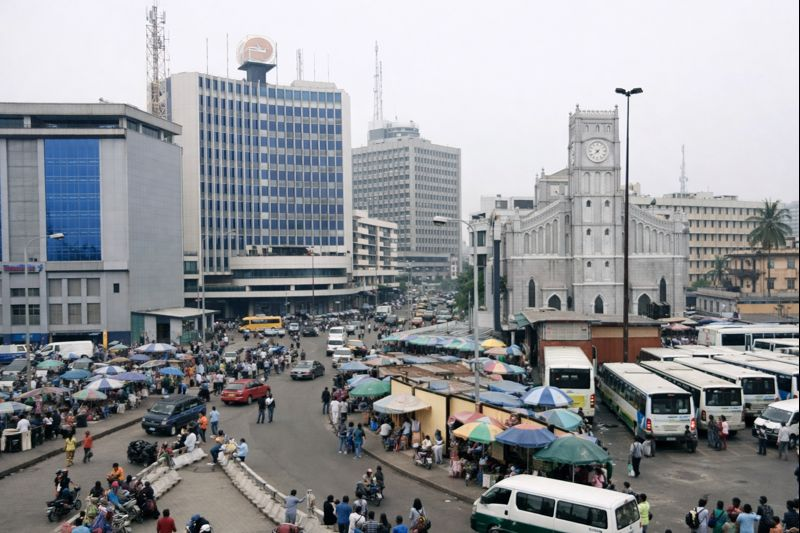

Lagos
75k
Lekki Conservation Centre
La plus longue passerelle suspendue d'Afrique dans une oasis urbaine

RetourPlongez dans l'énergie inépuisable du cœur battant de l'Afrique
Le Nigeria est une explosion de vie. Pays le plus peuplé du continent, il est le moteur économique et culturel de l'Afrique. De la métropole bouillonnante de Lagos, hub de la mode et de l'Afrobeats, aux collines sacrées d'Osogbo et aux rochers millénaires d'Abuja, le Nigeria est une terre de contrastes saisissants. Sa richesse réside dans sa diversité humaine (plus de 250 ethnies), son esprit d'entreprise légendaire et son patrimoine artistique qui rayonne dans le monde entier.
Découvrez les 15 sites emblématiques du patrimoine nigérian
La plus longue passerelle suspendue d'Afrique dans une oasis urbaine

Le "Gardien d'Abuja", un monolithe majestueux de 725m

Le sanctuaire de l'art contemporain nigérian par Nike Davies-Okundaye

Patrimoine mondial UNESCO et centre de la spiritualité Yoruba

Forteresse naturelle historique du peuple Egba

Safari et sources d'eau chaude cristalline de Wikki Warm Springs

Paysages mystiques et village ancien perché à 914m

Lieu de mémoire et point de non-retour historique

Splendeur architecturale au cœur de la capitale fédérale

La petite Suisse du Nigeria avec ses paysages brumeux

Siège d'une des plus anciennes dynasties royales d'Afrique

L'échappée balnéaire préférée des lagosiens accessible en bateau
L'un des plus grands marchés à ciel ouvert d'Afrique de l'Ouest
Sept niveaux de cascades spectaculaires dans une forêt dense
Le plus grand parc national du Nigeria, terre sauvage et montagneuse
La puissance de l'identité et l'éclat de Nollywood.
Le Nigeria est une puissance culturelle qui définit les tendances du continent. De la littérature de Wole Soyinka et Chinua Achebe à l'explosion mondiale de Nollywood et de l'Afrobeats, le génie nigérian est partout. La culture s'exprime dans la majesté des cours royales (Obas, Emirs), dans la splendeur des tissus Aso Oke et dans la ferveur des festivals traditionnels comme l'Argungu ou le Durbar.
La deuxième plus grande industrie cinématographique au monde en volume de production.
Le son de Lagos qui fait danser la planète, de Burna Boy à Wizkid.
Lagos est la capitale de la mode africaine, mêlant textile traditionnel (Adire) et design moderne.
Une mosaïque de traditions royales (Ife, Benin, Sokoto) qui structurent encore la société.

Ramenez l'excellence nigériane chez vous. Des tissus royaux aux répliques des bronzes du Bénin.
 Royal
Royal
Tissage manuel précieux utilisé pour les mariages et cérémonies Yoruba, symbole de statut social.
 Art
Art
Tête royale finement sculptée en bronze, réplique fidèle des chefs-d'œuvre de Benin City.
 Mode
Mode
Coton teint à la main avec des motifs en réserve, spécialité ancestrale des femmes d'Abeokuta.
Colliers de corail poli portés par les chefs et les mariées (Iyawo) au sud du Nigeria.
Maroquinerie d'exception en cuir de chèvre maroquiné, teinté selon les méthodes de Kano.
Édition limitée des classiques de Fela Kuti ou des stars actuelles de Lagos.

Victoria Island, Lagos

Abuja, Federal Capital

Ikoyi, Lagos

Ikeja, Lagos

Uyo, Akwa Ibom

Victoria Island, Lagos
La cuisine nigériane est une fête des sens. Riche, épicée et colorée, elle est célèbre pour ses ragoûts (soups) et son "Swallow".
Le riz épicé légendaire, considéré par beaucoup comme le meilleur riz d'Afrique.
Igname pilée servie avec une soupe de graines de melon et feuilles vertes.
Brochettes de bœuf épicées au Yaji, grillées au charbon, la street food par excellence.
Soupe de poisson ou viande très épicée et médicinale, un régal pour les amateurs de piment.
Beignets de haricots noirs frits, parfaits pour le petit-déjeuner avec de l'Ogi.
Pudding de haricots cuit à la vapeur, riche en saveurs et protéines.
Pâte d'igname séchée servie avec une soupe de feuilles de jute gluante, délice Yoruba.
Ragoût riche du sud-est à base de feuilles d'Afang et de fruits de mer.
Version nigériane du jerky : viande séchée fine et épicée, spécialité du Nord.
Pudding de riz onctueux, plat traditionnel des Hausa servi avec de la soupe Miyan Kuka.
L'accompagnement universel : bananes plantains frites dorées et sucrées.
Délicieuse soupe de noix de palme du Delta du Niger, servie avec du Starch.
Le Nigeria vibre d'une énergie créative et spirituelle à travers ses grands festivals nationaux.
La plus grande fête de rue d'Afrique (Décembre), une explosion de costumes et de danses.
Spectacle équestre magnifique des émirs du Nord célébrant la fin du Ramadan (Kano/Zaria).
Hommage annuel à Fela Kuti (Octobre), célébrant l'Afrobeat et l'esprit rebelle à Lagos.
La meilleure période pour voyager. Le temps est sec et moins humide, idéal pour les festivals de fin d'année.
Les pluies sont intenses, surtout au Sud. Cependant, c'est le moment où les paysages sont les plus verts et luxuriants.
Vérifiez les conseils par zone. Lagos est dynamique mais demande de la vigilance. Utilisez des services de transport certifiés (Uber/Bolt).
Vaccin fièvre jaune obligatoire. Prophylaxie antipaludique impérative. Buvez de l'eau purifiée exclusivement.
Soyez prêt à un rythme effréné. Lagos ne dort jamais. L'esprit de "hustle" (débrouillardise) est le moteur du pays.
Naira (NGN). Le pays passe au digital mais prévoyez du cash. Les cartes internationales fonctionnent dans les grands hôtels.
Expert Lagos & Vie Nocturne
Natif de Lagos, Tunde connaît tous les secrets de la ville, des galeries d'art aux meilleurs clubs d'Afrobeats.
Guide Culturelle & Spirituelle
Experte des traditions Yoruba, Funmi vous fera découvrir la magie d'Osogbo et les racines d'Abeokuta.
Expert Nord & Savane
Spécialiste de la région d'Abuja et du Nord, Ibrahim est votre guide idéal pour le Durbar et Yankari.